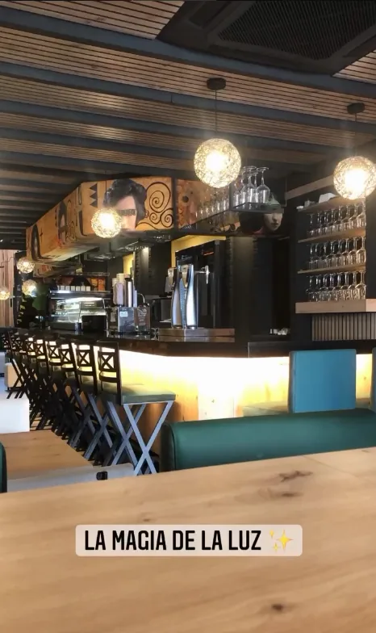

TJ · La Taberna del Herrero
TJ · La Taberna del Herrero
TJ · La Taberna del Herrero
TJ · La Taberna del Herrero

La Taberna del Herrero nace en Yecla como el lugar donde Tomás José y su familia llevan el oficio de cocinar al fuego. El nombre rinde homenaje al herrero: al calor constante de la fragua y al trabajo paciente que deja huella.
Cada plato se piensa igual que se forja un buen acero: con tiempo, producto de mercado y el mismo cariño de una comida en casa.
— Tomás José, TJ · La Taberna del Herrero

Seleccionado a diario, sin atajos
El mismo oficio, plato a plato
Cercanía y atención cuidada
Reserva tu mesa en la terraza, junto a la chimenea o en el comedor privado.